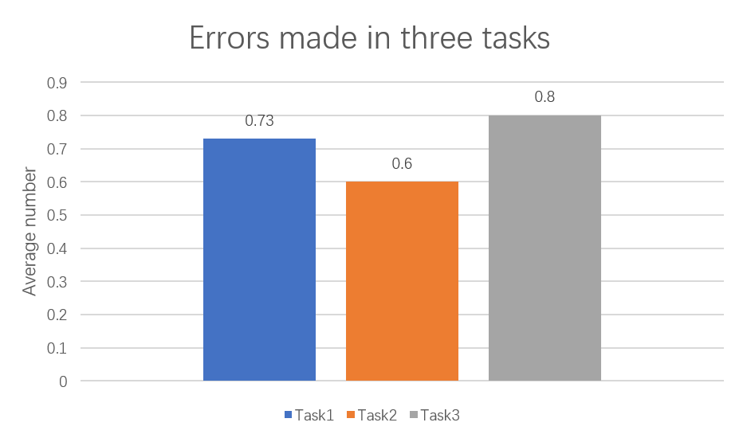
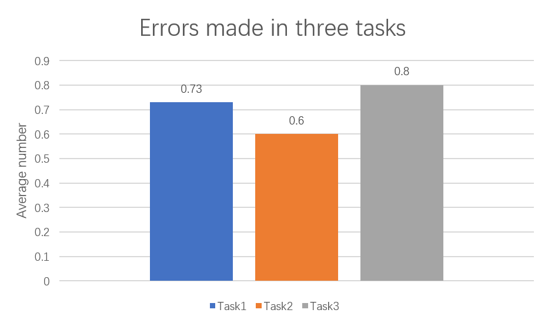

Cotton Bureau Redesign

项目是可用性课程的作业，对
Cotton Bureau，一个美国的服装线上购物网站进行重设计。
项目中使用一系列方法，对原网站进行可用性和可访问性进行评估，挖掘网站存在的问题
再根据可用性设计原则进行重设计，并进行定性和定量测试，以评估设计效果
This project is the coursework of Usibility, Principles and Practice, redesigning the online shopping
website Cotton Bureau.
A series of methods were used in the project to evaluate the usability and accessibility of the
original website and to discover existing problems.
Then redesign the website according to the usability design principles. Finally, evaluating the
outcome by qualitative and quantitative tests.
01 背景
Background
Cotton Bureau是一家创新的在线零售商，成立于2013年，总部设在美国宾夕法尼亚州。
他们主要提供定制T恤服务，公司提供空白服装，设计师可以通过网站上传自己的作品，进行印刷和在线销售。
他们的主要消费者包括设计提供商如设计师、企业、机构等，以及消费者如T恤爱好者。
当前的网站设计虽然简洁直观，但是却存在不少的可用性问题。
02 设计目标
Design Objectives
首要任务
Top
Tasks
根据连续两年的课堂调研，在线上时装网站购物时，年轻人最关注配送、图片质量、尺码、顾客反馈、商品描述等。
评估目标
Goals
主要关注首要任务相关的功能，
包括配送、退货、服装图示、客户评论、尺寸和合身性、产品说明、筛选、搜索。
以评估结果作为参考，重新设计网站，与A/B测试结合，保证重设计良好的用户体验
03 评估过程
Usability and Accessibility Evaluation
启发式
评估
Heuristics
Evaluation
5人一组，用尼尔森十项评估法则对网站进行评估
可访问性
评估
Accessibility
Evaluation
5人一组，用WCAG2.1的A级评估表对网站进行评估
性能评估
Performance
Measurement
围绕关键功能设置测试任务，任务1关于搜索，过滤，选择产品；任务2关于产品图片，用户评论，产品描述；
任务3关于尺码和合身判断。以花费时间、成功率、犯错数、迷失率来评估性能
 

满意度
评估
Satisfaction
Evaluation
用定性和定量结合的方式测试满意度
定量测试使用系统可用性量表(SUS)，
定性测试使用发生思考法(Think Aloud Method)配合主题分析(Thematic Analysis)
眼球追踪
Eye
Tracking
使用眼球追踪设备，对主页进行视线移动、停留、注视的测试
心理分析
Psychological
Analysis
根据色彩心理学理论、格式塔原理、信息气味、双重编码理论、
心理模型等界面设计的心理学原理对网站进行分析
04 评估总结
Evaluation Summary
整体情况
网站的色彩、视觉风格合理
基础性能较好
但存在许多细节缺陷
整体满意度差
问题主要集中在主页和商品详情页
可用性问题
● 主页不能直观展示网站的销售内容和业务
● 导航搜索栏重复且功能排布不合理
● 筛选器不完整且不合逻辑
● 产品列表没有翻页器，只能一直下拉
● 产品图片过少，缺少面料实物图和多角度图
● 尺码信息不完善
● 缺少产品细节描述
● 缺少客户评论、退货信息，配送信息不清晰
可访问性问题
● 页面文本字号太小
● 文本过长，且冗余
● 文本，按钮和其他元素的对比度低
● 不合理的筛选条件
● 产品详情选项过多且描述不清晰
● 产品详情页内容顺序不合逻辑
● 缺少图标，图像，链接和其他元素的标签和替代文本
05 网站重设计
Website Redesign
草图


主页
1. 调整导航
根据眼球追踪测试，用户聚焦点在网页右上角，因此将主要功能调整到右边
2. 调整banner
展示具有公司特色的图片及产品
3. 调整筛选器
筛选列表移动到顶部，避免上下滚动
根据用户的逻辑习惯重新组织筛选条件
4. 调整商品列表
商品用卡片展示，添加页码跳转器
商品
1. 调整商品图展示
提供多角度、面料图片
2. 调整商品选项
重新组织商品选项逻辑和描述
3. 调整面料说明，直接用细节图片展示
4. 调整尺码表，提供尺码推荐
5. 增加客户评论
6. 设计师信息和个人商店组织在一起
配送
1. 配送信息放在购物选项下
方便用户查看
2. 增加运费预估
注册登录后可预估运费
促进用户注册
购买
1. 重新组织购买流程
加入购物车后可跳转结算
2. 调整订单页面
突出主要信息，增加修改选择
响应式设计
06 A/B测试
A/B Testing
性能对比
Performance
通过性能测试对比，重设计后的网站任务用时、犯错率、迷失率均明显降低，完成率上升
可见重设计后网页更易于使用
满意度对比
Satisfaction
通过满意度对比，可见，重设计后的网站用户满意度更高，体验更好
08 反思
Reflection
1.由于我们无法与品牌方直接交流，因此首要任务的调查只是基于笼统的在线购物，而不针对具体的品牌。
如果有条件，最好根据品牌目标进行首要任务研究，然后根据市场进行优化。
2.由于时间和资源的限制，该研究的大多数参与者是UX设计的学生，覆盖的人口有限。
3.另外，测试是小规模测试。在更准确，更专业的研究中，应当邀请更多参与者参加测试
比如招募老顾客，对品牌感兴趣的新用户以及一般人群，以取得更可靠的结果。